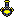
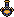
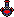
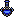
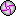
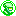

And now, the rest!!

This is the page where I post miscellaneous stuff. Everything from left-out mentionables to sorted details about the game to just plain stupid/wacky stuff.
To start, here's all the new icons for the new game. In this game, Ryu can hold every single Art he's ever had ... and a couple of new ones!

Blue Dragon Crystal
These hold simple power-ups, such as chi and health.
Chi points

(+5)
(+10)
(+15)

(+20)

(+30)
Healing Medicine

(+5)

(+10)

(+15)

(+20)

Red Dragon Crystal
These hold the ninja Arts.
Flame Arts

Fire Wheel
(-8)
Dragon Fireballs
(-8)

Art of the Invincibility
(0)
Blade Arts

Shurikens
(-5)

Windmill Stars
(-10)
Spinning Swords
(-5)

Vacuum Wave Blades
(-10)
New Arts

Fire Wave
(-20)

Starburst Flames
(-25)

Hurricane Blades
(-50)
Black Dragon Crystal
These can hold anything, to include the special new items below.
Special Items
1 Up
Self-explanatory.

Scroll
With a starting Chi capacity of 300, these will increase capacity by 100 Chi points. Get as many as you can!!!
Power of the Storm
Used for special storm attacks.

Ghost Clones
Can have two at once. With 2 clones, more icons worth 10 Chi points each

Orb of the Dragon
Gives you the ability to transform for a short time. Able to hold as many as you can get.

Dragon Spirit Powers
10 Spirits
Used for transformation time.
Used for transformation time.

...the home of the Angel...
*Ninja Gaiden, Ninja Gaiden 2: Dark Sword of Chaos, and Ninja Gaiden 3: Ancient Ship of Doom, are trademark and copyright property of Tecmo Inc. Display of the images on this site are for ENTERTAINMENT PURPOSES ONLY!
I, the Guardian, am not for profit in the creation of this website and make absolutely no money for it. I do not work for Tecmo Inc., nor am I affiliated with Microsoft or Nintendo. I am simply an enthusiast of the Ninja Gaiden Series.
I, the Guardian, am not for profit in the creation of this website and make absolutely no money for it. I do not work for Tecmo Inc., nor am I affiliated with Microsoft or Nintendo. I am simply an enthusiast of the Ninja Gaiden Series.